The systems
the engineering produced.
Each system below is the output of manufacturing and process engineering — a problem met on the floor while preparing parts for manufacture, planning processes and supporting production. Each is presented the way an engineering interviewer would want to see it: the operational problem, the engineering challenge, the solution, the technology, and the measured outcome — with screenshots from the live application.
Each system began as an
engineering problem, not a spec.
These are not software projects that happened to land in a factory. Every one traces directly to a manufacturing or process engineering responsibility I already held — the software is simply the most effective form that engineering work could take. The engineering foundation page sets out the CAD-for-manufacture, DFM and process discipline behind them in full.
- Production engineering & job preparation — assembling the right drawings for a job — became the Digital Job Pack Platform.
- DFM & engineering document control — right drawing, right revision, filed correctly — became the Document Intelligence Platform.
- SOPs & traceability — standard method and a record of who did what, when — became the Manufacturing Operations Platform.
- Process & continuous improvement — finding and measuring the bottleneck — became the Manufacturing Intelligence Platform.
Manufacturing Operations Platform
Android shop floor digitisation · Live ERP integration · Brother label printing
- Paper job packs assembled and distributed manually at each shift start.
- Clock-in and clock-out recorded on paper, then entered into MIE Trak by hand after the shift.
- No digital audit trail — no record of who worked on what, for how long, or when.
- Handwritten move tickets: inconsistent, slow and error-prone.
- End-of-shift data entry created daily admin overhead and ERP data lag.
- Replace paper job packs with digital equivalents on shop floor terminals.
- Capture operator clock-in/out via Android, updating MIE Trak in real time.
- Establish a full production audit trail — operator, job, work centre, timestamps.
- Integrate the Brother label printer SDK for standardised move tickets.
- Eliminate end-of-shift manual ERP data entry entirely.
- Android tablets at each work centre give operators direct access to their jobs, work instructions and tasks — no paper, no separate PC.
- A Flask integration layer on the factory server connects every operator action straight to MIE Trak — no manual step between floor and ERP.
- Live work order and job data drawn directly from the ERP database — current, not cached.
- Standardised move tickets printed on demand at the point of production.
- Runs on the factory LAN with no external internet dependency.
ERP Integration
Every operator action — clock-on, clock-off, job selection and quantity sign-off — updates the ERP at the moment it occurs. There is no end-of-shift upload, no manual data entry step, and no lag between what happens on the shop floor and what management sees. MIE Trak reflects the live state of production throughout the working day.
Platform Screenshots · All Screens Live
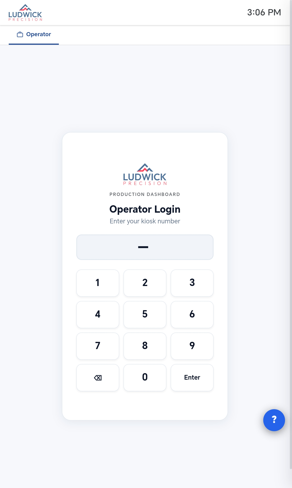
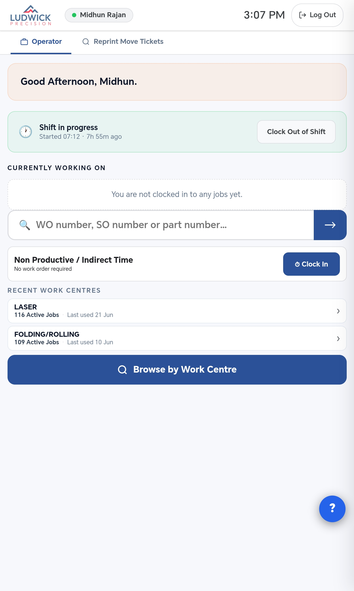
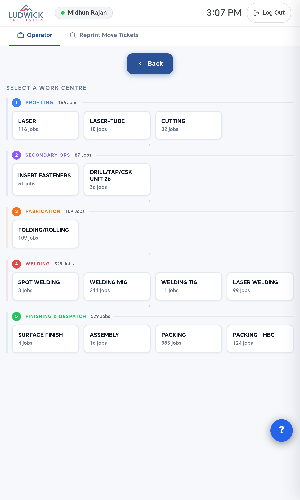
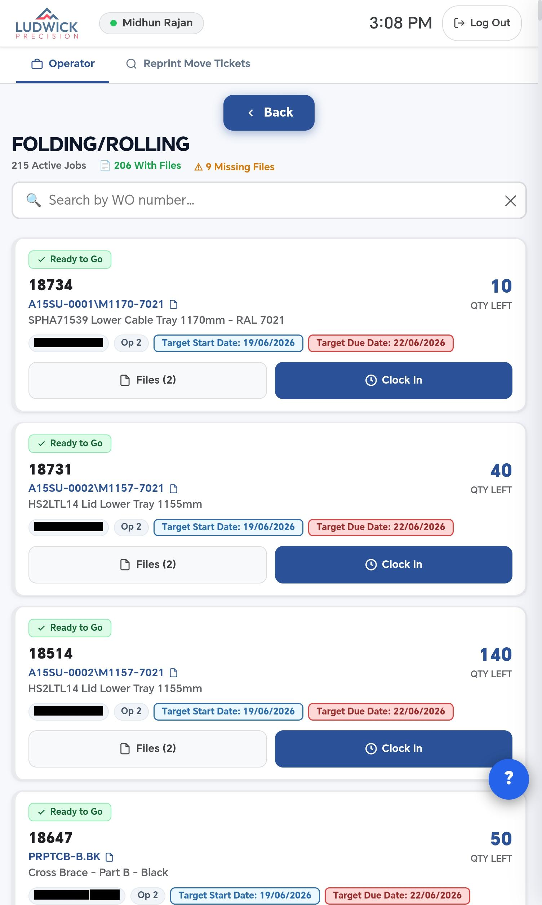
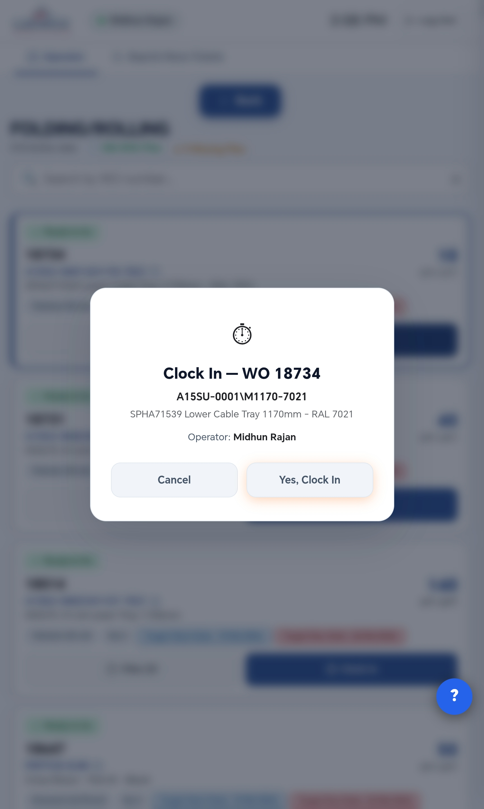
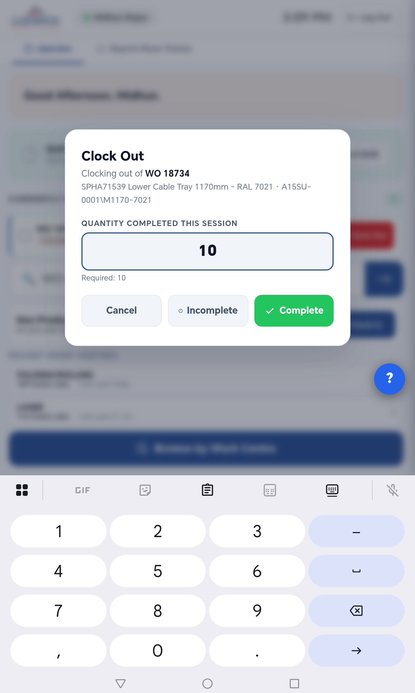
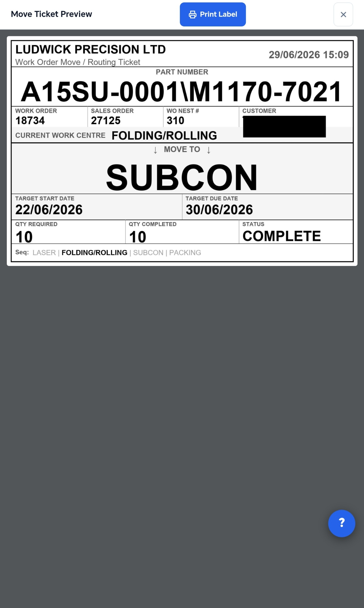
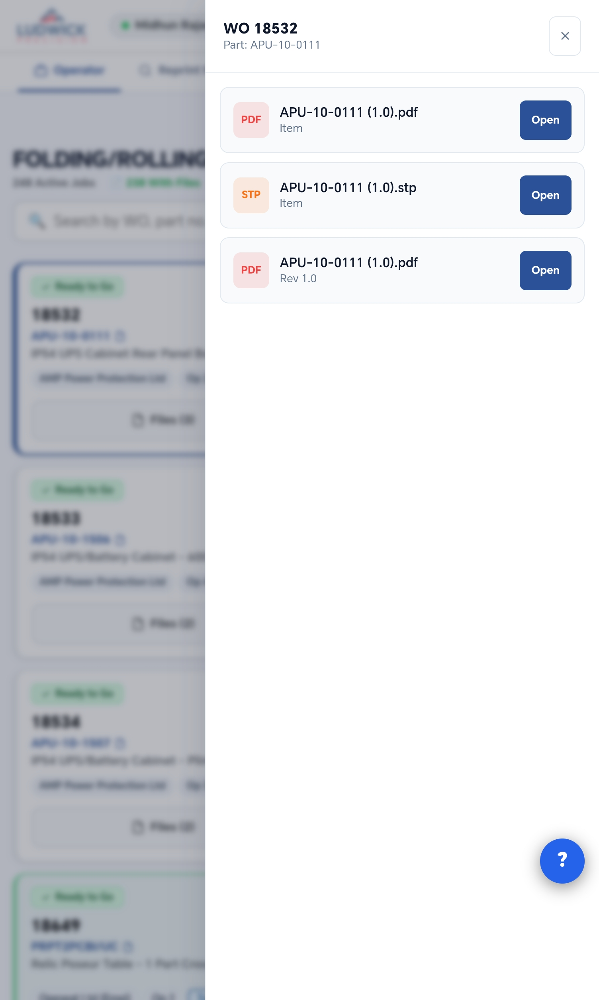
Scroll to view all eight live screens · operator login through to ERP file access — tap a part number and the drawings and STEP files attached in the ERP open directly on the terminal
- Operators no longer handle paper — every job, work instruction and sign-off is digital, traceable and ERP-linked from the start of each shift.
- Labour data in MIE Trak is accurate in real time — no reliance on manually entered, end-of-shift records.
- A complete digital production audit trail exists for every job — traceability paper could never deliver.
- Standardised, ERP-linked move tickets replaced handwritten labels — part traceability improved.
- Adopted across all 19 production operators without external consultancy or third-party support.
- Operators were involved throughout design — every screen tested on the shop floor before finalisation.
- Shares data infrastructure with the Intelligence Platform — operator data feeds dashboards with no duplication.
- Every requirement defined by the engineer who operates the production environment.
- Deployed and maintained on factory infrastructure without external development resource.
Manufacturing Intelligence Platform
Real-time production dashboards · Executive & supervisor visibility · SQL-driven reporting
- Management had no real-time view of the shop floor — status was known only at end-of-shift or after a floor walk.
- Supervisors walked the floor or called operators to establish job progress — time lost from production management.
- Overdue work orders were only visible with specialist ERP access — issues went unaddressed for hours.
- Labour utilisation and operator efficiency were unknown during the working day.
- Main Dashboard — live production summary; open and overdue work orders at a glance.
- Live Shop Floor — every active operator session with elapsed time, job and work centre.
- Employee Efficiency — actual vs. estimated time per operator; session-level performance.
- Production Insights — work centre load, job distribution and production patterns.
- A dashboard server aggregates live production data and presents it in a browser — any device on the factory network, no login required.
- All data drawn live from the MIE Trak database — the same source of truth that drives production.
- Operator data from the Operations Platform feeds dashboards directly — shop floor and management share the same data, no delay.
- No additional integration cost beyond the shared infrastructure already in place.
Dashboard Screenshots · Live Production Data
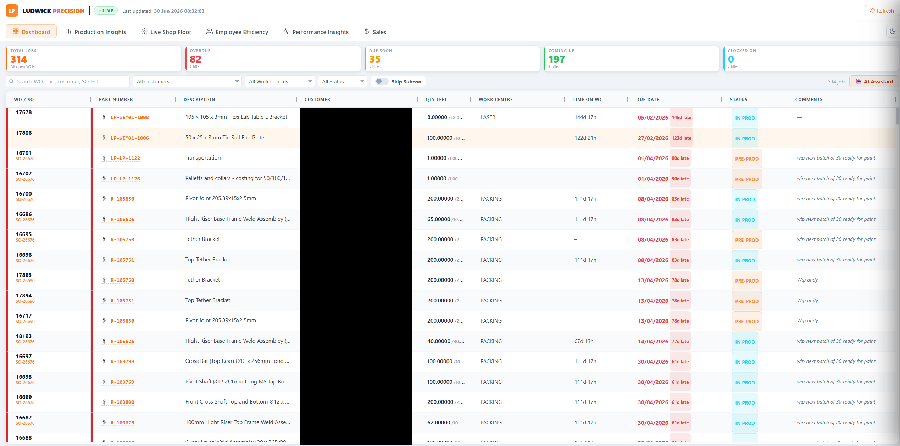
Main Dashboard · Live MIE Trak SQL Server data · used by production managers and directors · refreshed on every page load
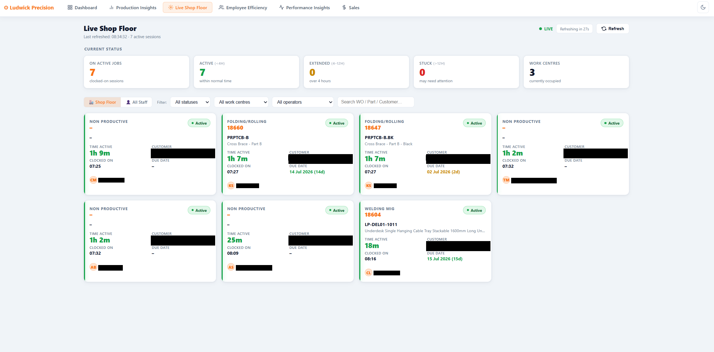
Live Shop Floor · active sessions, elapsed time, operator & work centre
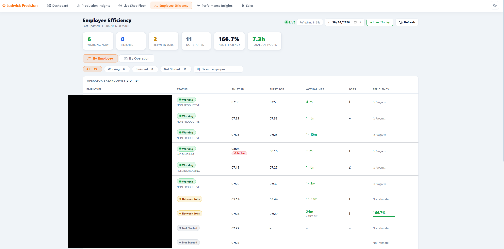
Employee Efficiency · actual vs. estimated time per operator
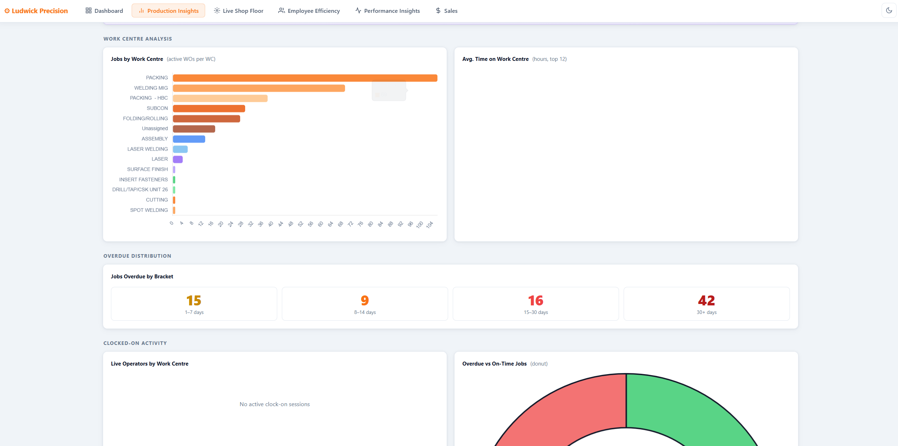
Production Insights · aggregated from live operator session records · for supervisors and production planning
- Directors and supervisors have real-time production visibility throughout the day — no floor walk, phone call, or direct ERP access.
- All 19 operators and 14 work centres visible in a single management view — the entire shop floor at a glance.
- Overdue work orders flagged continuously — scheduling issues acted on as they develop, not after delay.
- Operator efficiency visible in real time — informed workload and scheduling decisions during the shift.
- Supervisor time freed from status floor walks for higher-value production management.
- Deployed on existing factory server infrastructure — no additional hardware, licensing or third-party software.
- Accessible from any device on the factory network — any browser, any screen, no app install or credentials.
- Shares data directly with the Operations Platform — no separate data collection or duplicate ERP integration.
- Read-only against the MIE Trak SQL Server database — zero risk of production data being altered through the dashboard.
A dedicated deep-dive on the Manufacturing Intelligence Platform — why each capability matters — is on the Manufacturing Intelligence page →
Digital Job Pack Platform
Excel input · SQL lookup · PDF extraction · Consolidated print-ready job pack
Job pack preparation was a time-intensive manual process: engineers or planners received a list of part numbers, then manually located the corresponding assembly PDFs across multiple customer folder locations, extracted the relevant drawings, and assembled them into a single job pack for the shop floor.
Repeated multiple times per day, it consumed significant engineering time, produced inconsistent results, and was a recurring source of production delays when documentation was missed, misfiled or assembled incorrectly. Preparation ranged from 30 minutes to several hours per batch.
- Engineer uploads an Excel file of part numbers — the only manual step in the entire process.
- Each part number matched automatically against the live ERP database — no manual searching across folder structures.
- Relevant part drawings extracted from source PDFs automatically — only the required documentation included.
- A single consolidated, correctly ordered, print-ready job pack PDF assembled for distribution.
- Total preparation time: seconds per batch — no manual retrieval, sorting or assembly.
Automated Workflow
System Workflow — End to End
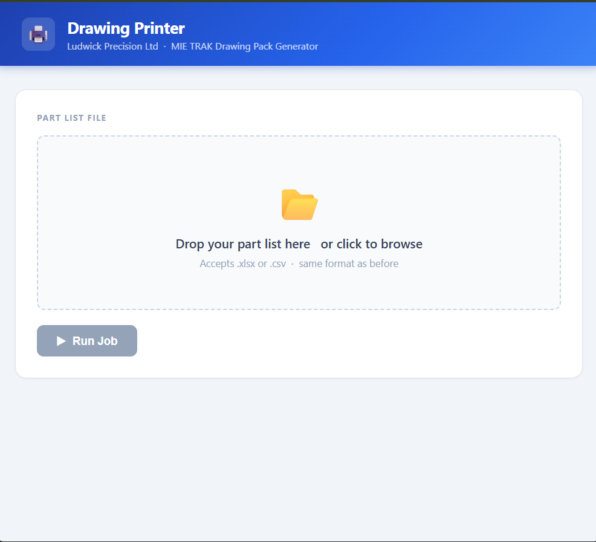
① Ready — awaiting part list
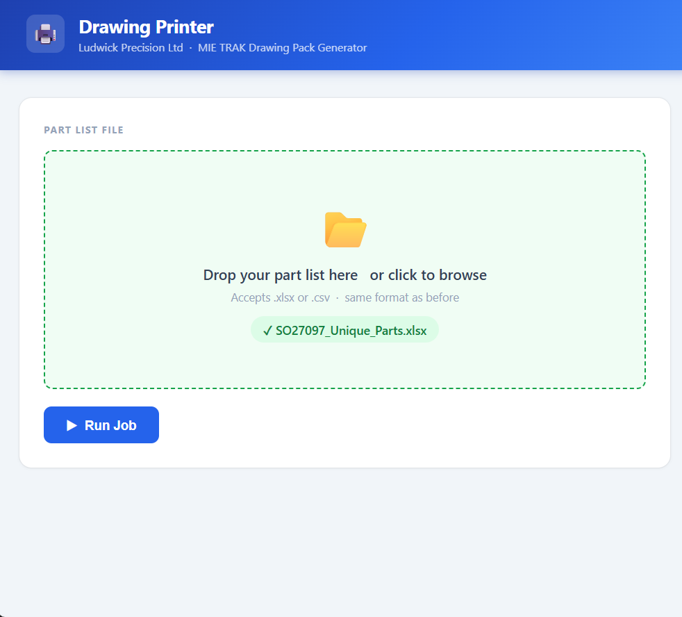
② Part list loaded — one click to run
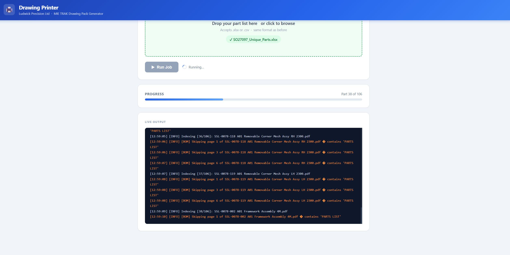
③ Processing — live PDF extraction with real-time progress output
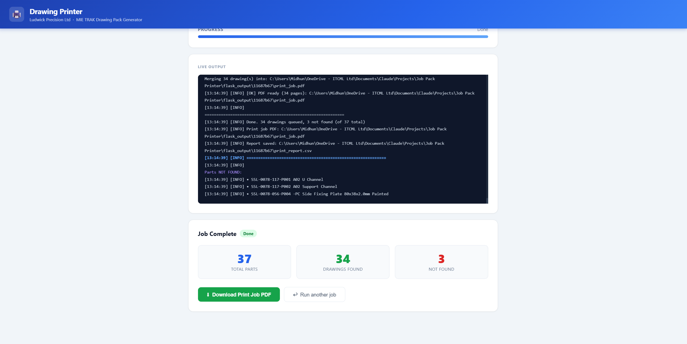
④ Job complete — 37 pages consolidated, print-ready PDF available for download
- Job pack preparation reduced from hours to seconds — engineering time recovered for value-adding production work.
- Production delays from missing, incorrect or out-of-order documentation significantly reduced.
- Connected to live ERP data — the correct, current documents retrieved automatically, not a cached copy.
- A repetitive daily task now handled automatically as the standard workflow.
- Connects to the live MIE Trak SQL Server database on every run — output based on current records, not a static cache.
- Designed around the document types and folder structures already in use in production.
- Run on demand by engineering or planning — no scheduled process or background service required.
- Deployed on factory infrastructure without external development resource.
Document Intelligence Platform
Drag-and-drop intake · Automatic part number detection · MIE Trak ERP filing and attachment
Engineering documentation — PDFs, STEP files, DXF files — was filed manually into MIE Trak. Engineers received documents, identified the part number, navigated to the correct customer and part folder, placed the file, then manually attached it to the corresponding part record in the ERP.
This consumed engineering time on administration, and was a persistent source of downstream problems — documents filed in the wrong location, or not attached to the correct ERP record, creating delays across production, purchasing and quality.
- Engineer drops documents onto the application — PDF, STEP and DXF all supported; no further manual input.
- Part numbers identified automatically from document metadata and file naming — no manual identification, no misfiling.
- Documents organised into the correct customer and part folder structure automatically.
- Each file attached to the corresponding part record in MIE Trak automatically.
- Document control becomes a consistent, automated process — correct practice enforced regardless of who handles the files.
Application Screenshots
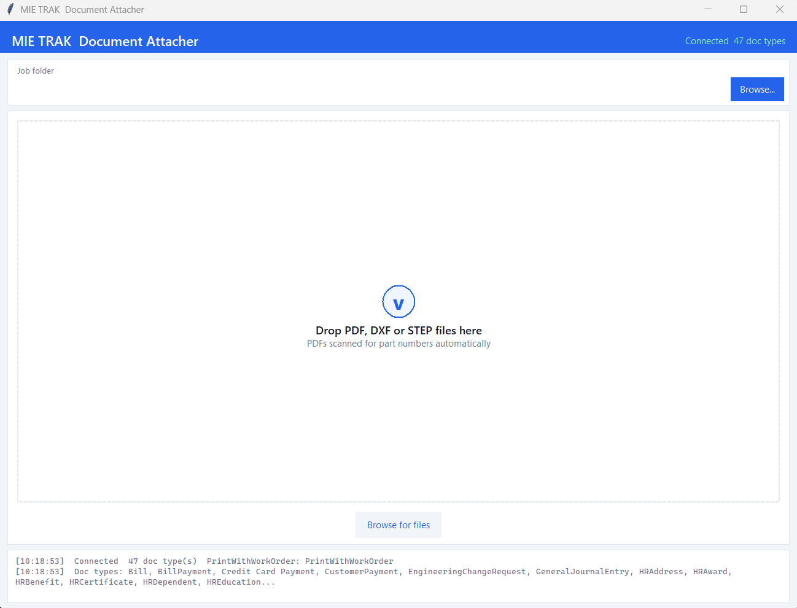
Main Interface · drag-and-drop document intake
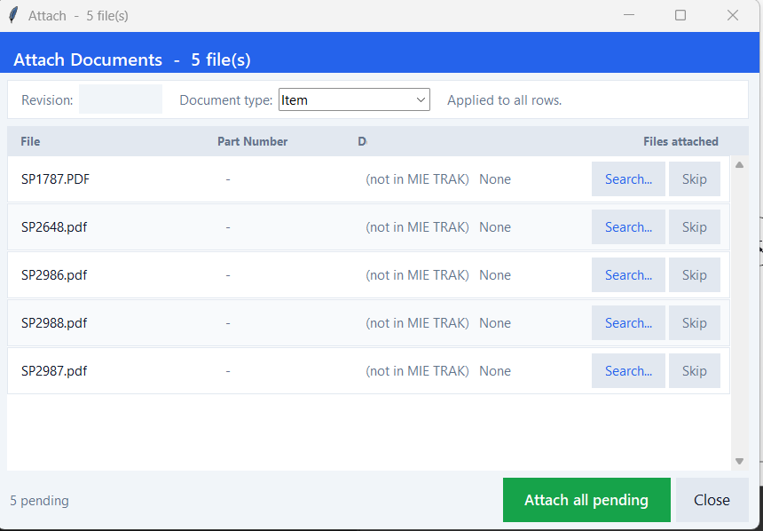
Document Processing · automatic filing and ERP attachment
- Manual document filing substantially reduced — engineering time redirected to production-facing work.
- Consistent, correctly structured document management enforced automatically — misfiling significantly reduced.
- Part records in MIE Trak maintained with current, attached documentation — reducing the risk of production proceeding with incorrect or missing drawings.
- Document control managed through a system-enforced process rather than manual discipline.
- Supports PDF, STEP and DXF — the three primary formats used in precision sheet metal engineering and purchasing.
- Files that cannot be matched automatically are flagged for manual review rather than silently misfiled.
- All documents remain on factory infrastructure — no external cloud dependency.
- Deployed and maintained without third-party support; updated as requirements evolve.
Every system at a glance
| System | Status | Business Outcome |
|---|---|---|
Manufacturing Operations Platform Android · Flask · MIE Trak · SQL Server | Live | Paperless shop floor operations — 19 operators and 14 work centres connected to ERP in real time. Paper job packs, clock cards and move tickets replaced with a digital production workflow. |
Manufacturing Intelligence Platform Python · Flask · Jinja2 · SQL Server | Live | Real-time production visibility for management — live dashboards showing active operator sessions, work centre status, efficiency data and production insights without ERP access or floor visits. |
Digital Job Pack Platform Python · PDF Automation · SQL Server · MIE Trak | Live | Engineering workflow automation — job pack preparation reduced from hours to seconds per batch. Drawing retrieval, PDF extraction and consolidation automated against live ERP data. |
Document Intelligence Platform Python · MIE Trak API · PDF · STEP · DXF | Live | ERP document automation — drag-and-drop intake with automatic part number detection and MIE Trak filing. Engineering document control managed through a system-enforced process. |